安装
企业微信
开始使用企业微信
下载企业微信，支持iOS、Android、Windows、Mac四大平台，电脑和手机消息可实时同步，并在云端保存，方便随时查找。
未注册企业微信，如何安装？
-
打开小睿办公官网http://www.xiaorui.work/。
-
点击小睿办公网站顶部注册按钮进入注册页。
-
或点击小睿办公网站顶部登录按钮进入登录页，点击没有企业微信？立即快速注册，进入注册页。

-
进入快速注册页，填写信息，包括企业名称、管理员名称及管理员手机号，点击注册企业微信按钮。
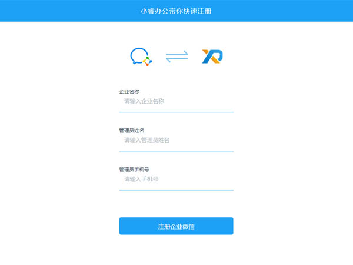 -
确认使用“小睿办公”。点击开始注册企业微信按钮。
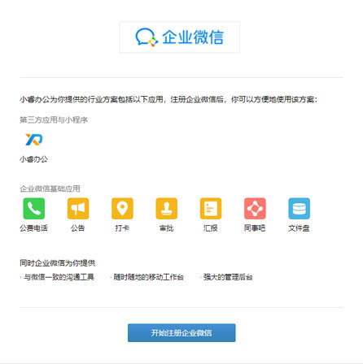 -
填写企业信息，包括企业名称、行业类型及人员规模；提交管理员详细信息，包括姓名、手机，并收取及填写手机短信验证码；打开微信扫描页面下方的二维码进行管理员微信绑定。绑定成功后，即可用此微信登录管理后台。勾选同意服务协议后，提交注册申请。用此前绑定的管理员微信扫描屏幕上方二维码，登录管理后台。
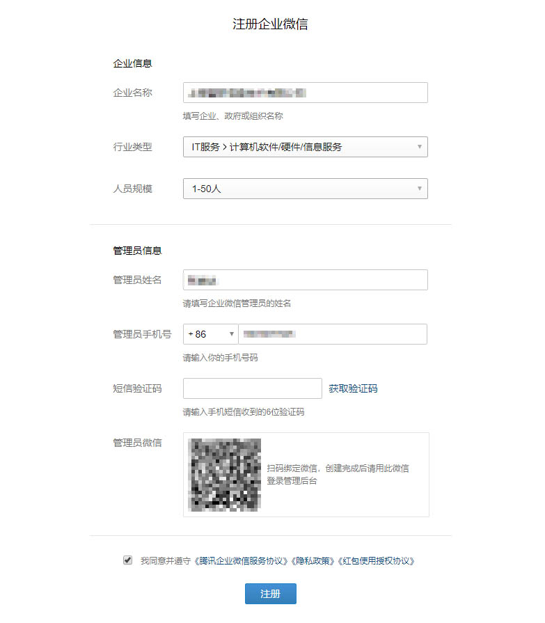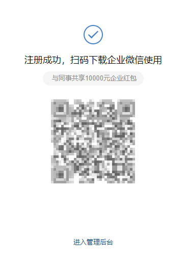 -
进入管理后台，点击应用与小程序，选择第三方中的小睿办公，可查看企业基本信息。
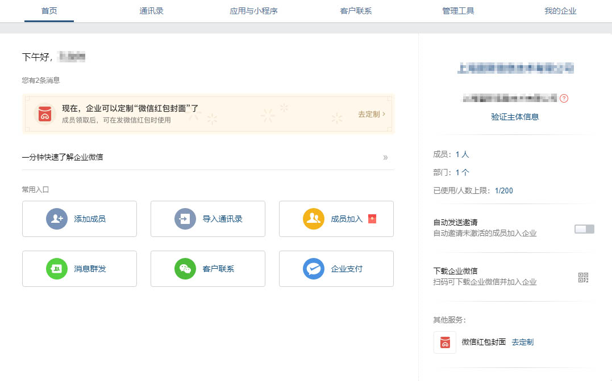 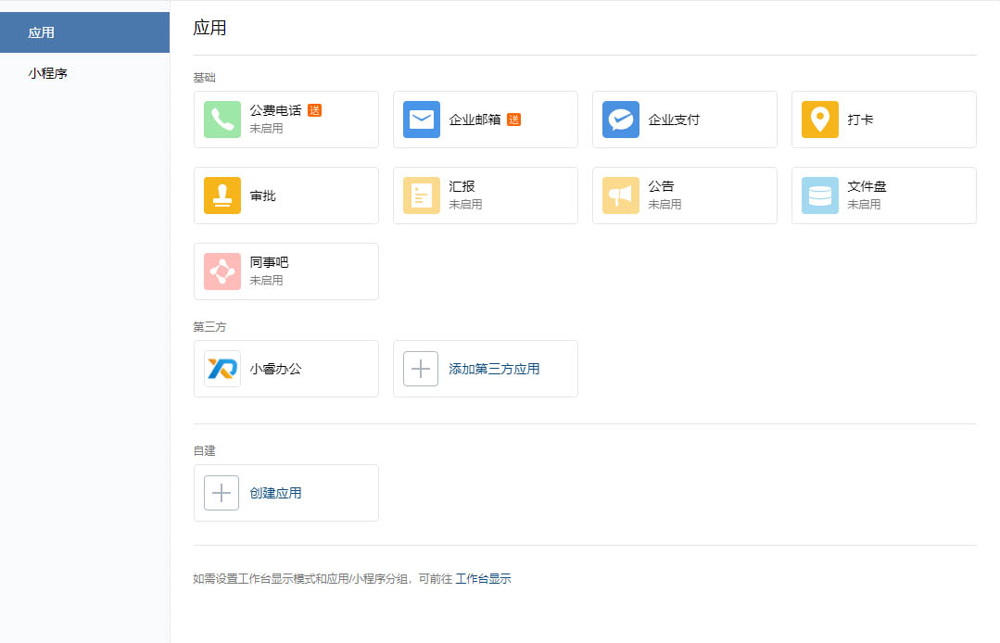 -
点击前往服务商后台，进入小睿办公后台。
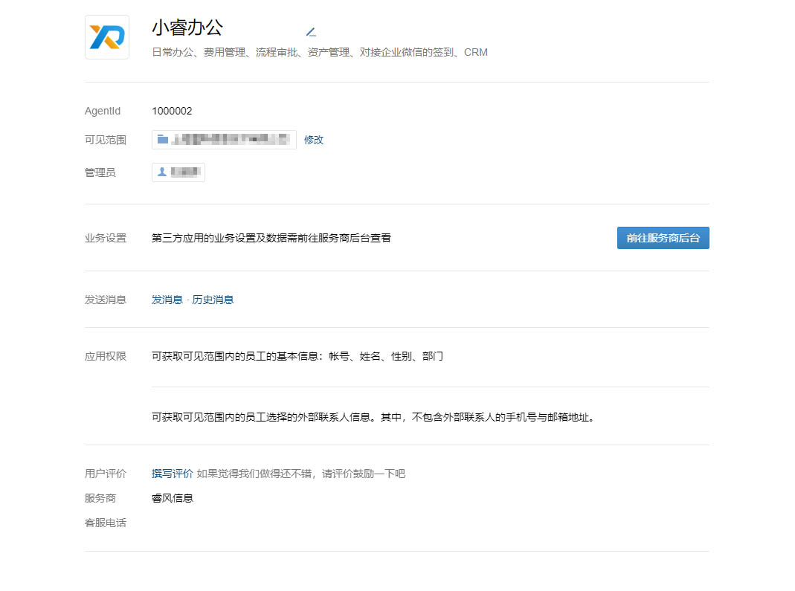 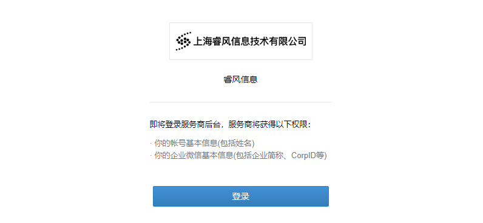 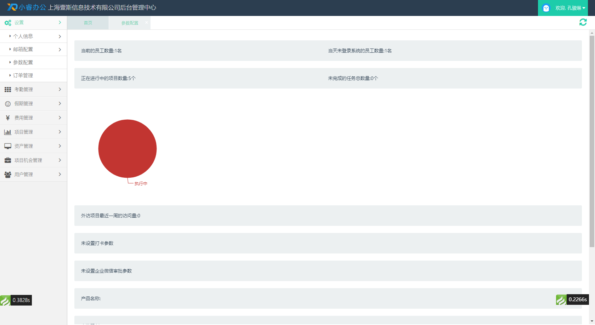
已注册企业微信，如何安装？
-
打开小睿办公官网http://www.xiaorui.work/。
- 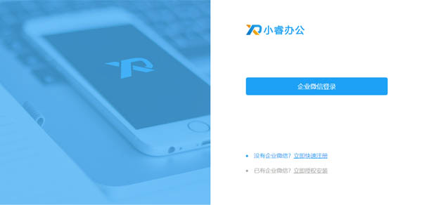
-
选择“小睿办公”，点击下一步按钮。
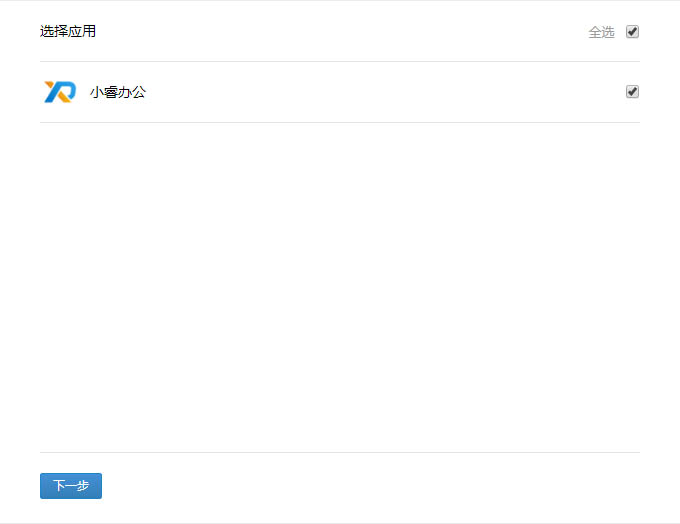 -
点击设置按钮，设置应用可见范围。
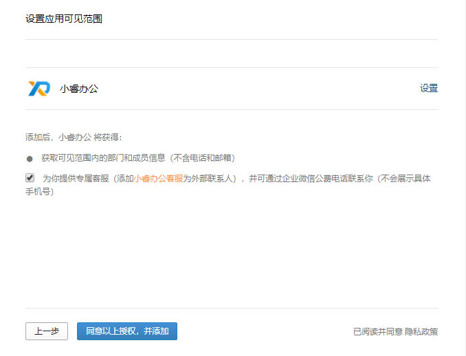 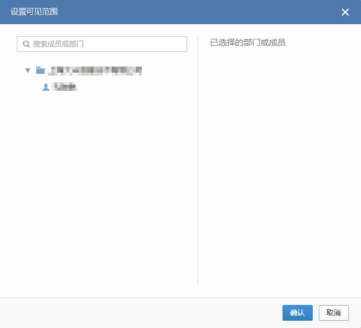 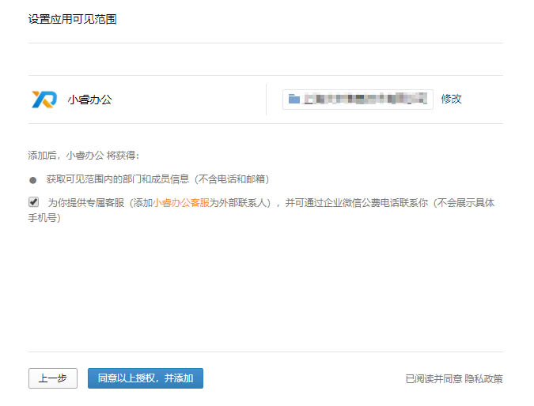 -
设置完成后点击同意以上授权，并添加按钮，提示添加成功，并跳转到小睿办公后台。
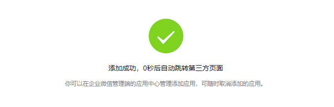 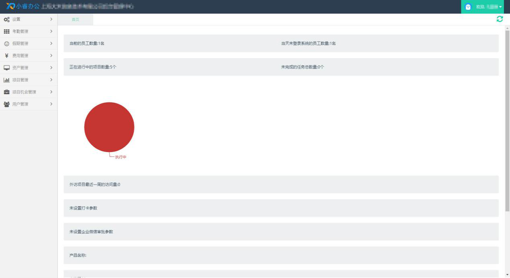